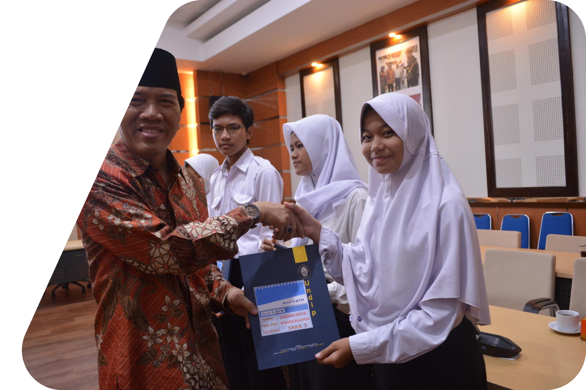
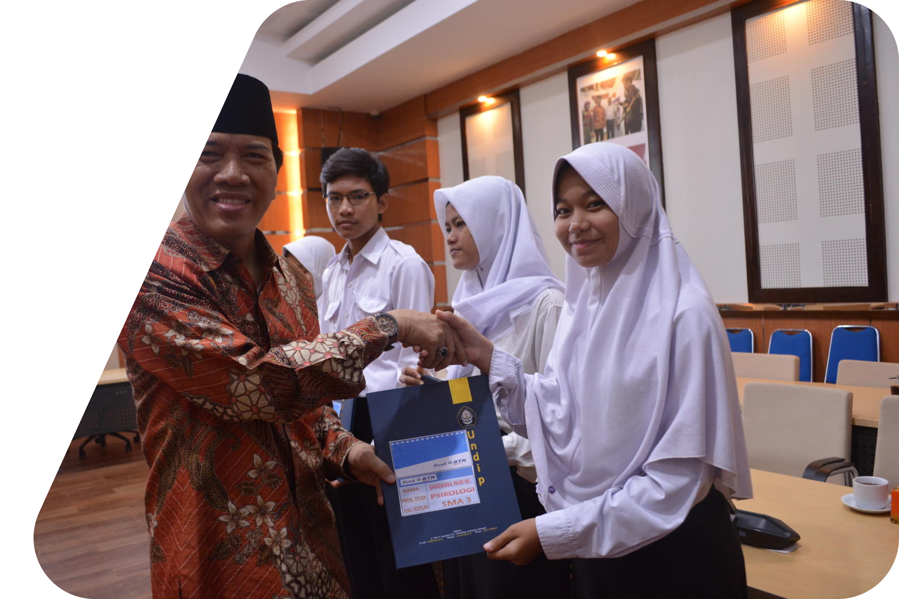

 HOME
HOME


Beasiswa ini diberikan untuk mahasiswa dari keluarga kurang mampu serta untuk mahasiswa berprestasi yang memenuhi persyaratan dari beasiswa yang diikuti.
Cukup banyak beasiswa yang ditawarkan UNDIP untuk mahasiswanya, beberapa diantaranya yaitu Beasiswa PPA, Beasiswa LPDP, Beasiswa Djarum Plus, Beasiswa BBP PPA / BBM, Beasiswa Supersemar, dan KIP Kuliah.


EMAIL : perguruantinggi@jateng.gov.id
Telepon : (024) 3515301
Alamat : Jl. Imam Bonjol No.207, Pendrikan Kidul, Kec. Semarang


E. Djarum Beasiswa Plus
Djarum Beasiswa Plus merupakan beasiswa yang diberikan oleh Djarum Foundation sebagai bentuk kepeduliannya terhadap dunia pendidikan di Indonesia. UNDIP adalah salah satu mitra dari Djarum Foundation. Jadi, mahasiswa UNDIP dapat mengajukan diri untuk mendapatkan Djarum Beasiswa Plus.
A. Bantuan Biaya Pendidikan (KIP Kuliah)
KIP Kuliah adalah bantuan biaya pendidikan yang diberikan kepada calon mahasiswa dari keluarga kurang mampu dan memiliki prestasi baik yang pengajuan pendaftarannya dilakukan sejak menjadi calon mahasiswa UNDIP.
Informasi lebih lanjut silahkan baca pada artikel : KIP Kuliah untuk Calon Mahasiswa
B. Beasiswa PPA
Beasiswa PPA (Peningkatan Prestasi Akademik) merupakan beasiswa yang diberikan kepada mahasiswa UNDIP yang berprestasi. Pengajuan dapat dilakukan minimal di semester II.
C. Beasiswa BBP PPA
Beasiswa BBP PPA dulunya bernama Beasiswa BBM. Beasiswa BBP PPA adalah beasiswa yang ditujukan bagi mahasiswa UNDIP yang berasal dari keluarga kurang mampu.
D. Beasiswa Supersemar
Beasiswa Supersemar adalah beasiswa yang ditujukan untuk mahasiswa UNDIP yang berasal dari keluarga kurang mampu.
F. Beasiswa LPDP
Beasiswa LPDP (Lembaga Pengelola Dana Pendidikan) adalah beasiswa yang diberikan kepada calon mahasiswa yang ingin studi lanjut ke jenjang Magister (S2) atau Doktor (S3) ke perguruan tinggi di luar negeri ataupun di dalam negeri.